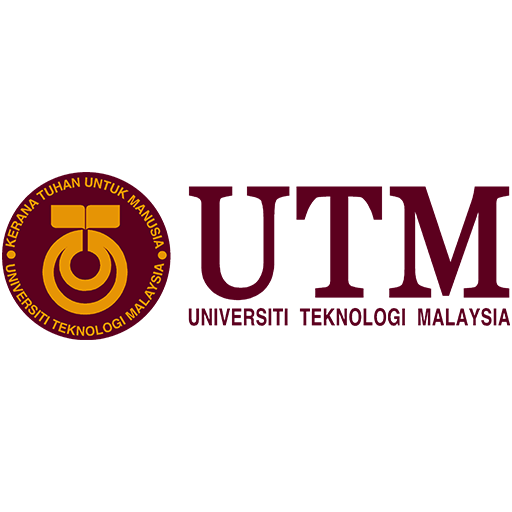
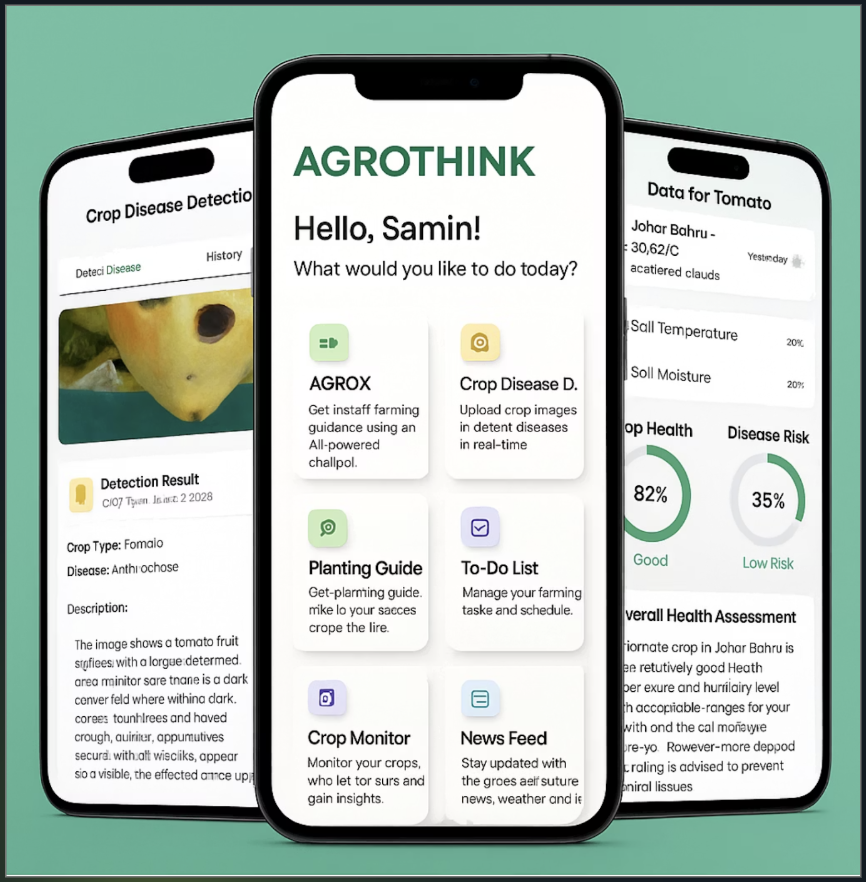

One academic year. Unbroken excellence.
AI-Powered Agricultural Platform · Live on Huawei AppGallery · Champion at 9+ Competitions

#ShellSelamatSampai Varsity Challenge — "Innovate! Captivate! Save Lives!"
Innovation is not a single win. It's coming back stronger.
Four pillars. One student. Direct contribution to UTM Sanjungan Bangsa.